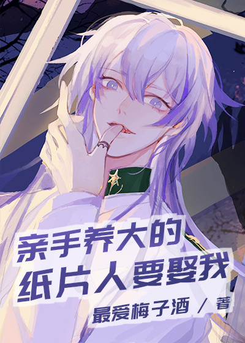

Xu Sili murió a una edad temprana. Se despertó de nuevo sólo para descubrir que... no sólo estaba vivo sino que se había convertido en el nuevo emperador de un imperio alienígena. El imperio se encontraba en un estado miserable y enfrentaba la crisis de ser destruido por bestias alienígenas en cualquier momento.
En ese momento, cayó sobre el exclusivo trono de oro del emperador. Frente a él estaba un hombre apuesto con uniforme militar blanco. El hombre llevaba botas negras hasta la rodilla y le pisó el pecho. Había una sonrisa cruel y sedienta de sangre en su rostro mientras colocaba la pistola láser en la frente de Xu Sili. Declaró: "Muere, nuevo emperador".
¡Espera espera! Xu Sili se sintió confundido cuando vio claramente el rostro del hombre. ¿Por qué este hombre se parecía tanto al personaje virtual que crió? ¿Eh? ¡Este era el bonito uniforme que Xu Sili dedicó largas horas a conseguir!
Si Sheng tenía un secreto. Podía escuchar la voz de Dios.
Durante el tiempo en que todos a su alrededor se estaban volviendo locos por la princesa, él sabía que todo acerca de la princesa era en realidad un regalo de Dios, el que realmente lo salvó del dueño de la salvación.
¡Era el gran Dios!
Era misterioso y poderoso. Tenía la voz más conmovedora del mundo. Agitaba la mente de Si Sheng todas las noches, manteniéndolo hechizado e incapaz de dormir. Si Sheng tenía tantas ganas de verlo que se estaba volviendo loco.
Finalmente, hubo un día en que Dios le preguntó: “¿Qué harías si me presentara ante ti?”
Si Sheng se arrodilló sobre una rodilla y humildemente ofreció su lealtad. Sin embargo, en ese momento se dio cuenta de que tenía una ambición más profunda… más salvaje en su corazón por Dios.
Probablemente se trate de una historia en la que el personaje principal transmigra a un mundo alienígena y reconstruye un hogar con su personaje virtual.